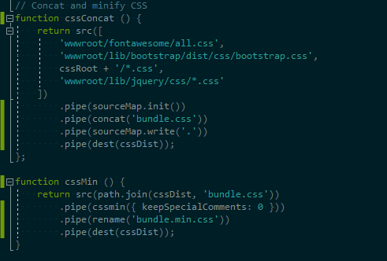
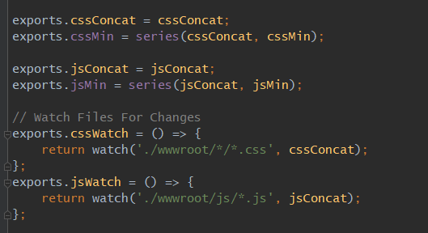

How Gulp and SASS Can Ease your Workload and
Save your world*
*Your mileage may vary. Hyperbole is not guarantee of future performance.
1. Gulp
What is Gulp?
Gulp is a NodeJS tool which runs tasks on files on command or at specified intervals.
Those intervals can be:
When invoked by the IDE Events such as Project Open or Build (aka Bindings)
When a specific subset of files have saved changes: Watch tasks
On command by interacting with the task
What tools (IDEs) offer support?
Visual Studio - Windows
JetBrains Rider - Universal
VS Code - command line through terminal is more reliable.
Command Line (bash, power shell)
Visual Studio
Support is provided by the Task Runner Explorer.
Tasks can be bound by IDE events or Manually invoked.
Navigate to the Task Runner ExplorerTask Bindings in VS 2017Manually Running a Task in VS 2017
JetBrains' Rider
Support is provided by the IDE and can be tricky to locate.
Again, tasks can be bound by IDE events or Manually invoked.
Bindings
Bound to Solution OpenBound to Project Build
Manual
Open the Gulp Task PaletteClick on a Task to run it.
Command Line support
Tool support
Bash native or via GitBash
Powershell
Bash (only have windows flavored captures)
Windows Ubuntu subsystemGitBash
Powershell
Using Powershell
Caveats
You have to know which command you want to invoke.
No automagical task running locally. Deployment has a scritpt to run the `deployment` task as part of
the roll-out process.
How does it work?
A Gulp file (gulpfile.js) is written and added to the root of the project. That file contains the series
of tasks a developer
wants run and the criteria in which to run the task. All of this is performed by NodeJS behind the
scenes.
Concatenate a series of CSS files and add sourceMaps to them.

When a specific subset of files have saved changes, perform a series of tasks

Why should we use it?
File Watching
Source Maps
Ability to Extend functionality without disrupting deployment process
EX: Next Steps are SASS for CSS and ESLint for JS code quality
Cross Architecture Reliability
How to learn more?
We are eager to teach to speed adoption. Please ask!